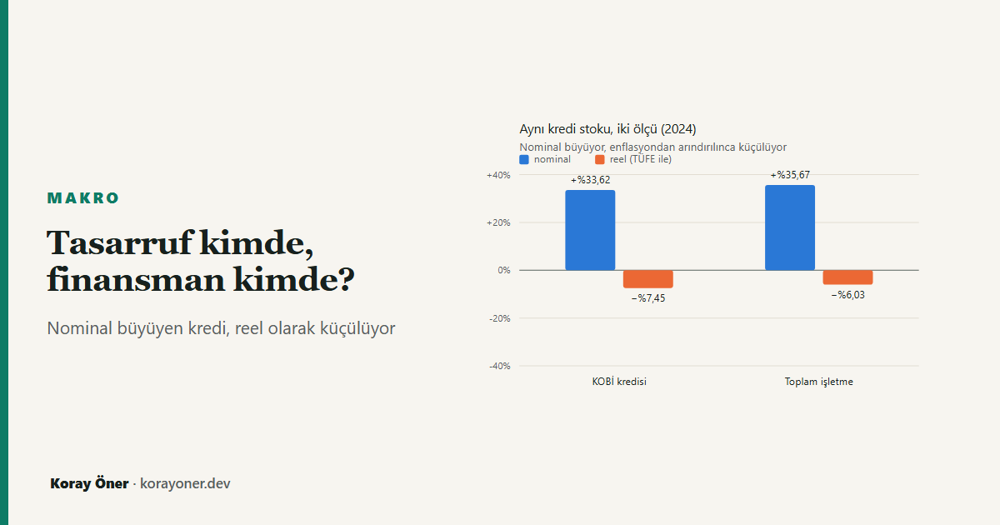

Kısa cevap
Tasarrufun ağırlığı hanelerde değil şirketlerde. 2024'te gayrisafi tasarrufun GSYH'ye oranı %30,1; bunun %18,9'u mali olmayan şirketlere ait. Hanehalkının katkısı %6,9. Şirket tasarrufu o şirketin kendi iç finansmanını destekleyebilir, ama başka bir firmanın yatırımına kendiliğinden akmaz.
Aynı enflasyon herkesi aynı ölçüde vurmuyor. Gıda ile konut-kira, alt gelir grubunun bütçesinin %63,6'sını, üst grubun %34,9'unu tutuyor — arada 28,7 puan var. Bu iki kategoride %10'luk ortak bir fiyat artışı, mevcut sepetin maliyetini alt grupta %6,36, üst grupta %3,49 artırıyor. Tasarruf edebilmek için kalan alan aynı değil.
KOBİ kredisi hem büyüyor hem küçülüyor. 2024'te stok nominal olarak %33,62 arttı; yıl sonu enflasyonuyla (%44,38) düzeltildiğinde %7,45 küçüldü.
Bu yazı, aynı konulu çalışma metninin bulgularını özetler ve sayılarını bağımsız olarak yeniden üretir: doi.org/10.5281/zenodo.22819842.
Tasarrufu kim yapıyor?
Tasarruf tartışması genellikle tek bir oran üzerinden yürüyor. Oysa o oranın içinde dört ayrı kurumsal sektör var ve ağırlıkları birbirine hiç benzemiyor.
| Kurumsal sektör | GSYH’ye oran |
|---|---|
| Mali olmayan şirketler | %18,9 |
| Hanehalkı | %6,9 |
| Mali şirketler | %2,7 |
| Genel devlet | %1,5 |
| Bileşenlerin toplamı | %30,0 |
| Yayımlanan toplam | %30,1 |
Tablonun altındaki iki satır bir dürüstlük notudur: yuvarlanmış bileşenlerin toplamı %30,0, yayımlanan toplam %30,1. Fark yuvarlamadan geliyor ve kaynak çalışma bunu kendi notunda söylüyor.
Buradaki ayrım kavramsal olarak da önemli. Hanehalkının GSYH'ye katkısı %6,9; ama hanehalkının kendi harcanabilir gelirine göre gayrisafi tasarruf oranı 2024'te %11,3 (2023'te %11,8). İki sayı farklı paydalara sahip, dolayısıyla birbirinin yerine kullanılamaz — ve uluslararası karşılaştırmalarda sık sık kullanılıyor.
Neden aynı enflasyon aynı şeyi yapmıyor?
Tasarruf edebilmek için önce harcamadan artan bir şey olması gerekiyor. O artığın büyüklüğü gelirin düzeyine olduğu kadar harcamanın bileşimine de bağlı.
Gıda ve konut-kira (izafi kira dahil) alt gelir grubunun bütçesinde %63,6, üst grupta %34,9 yer tutuyor. Bu iki kategoride fiyatlar birlikte artarsa, mevcut sepetin maliyeti iki grupta aynı oranda artmaz.
| İki kategoride ortak fiyat artışı | Alt gelir grubu | Üst gelir grubu | Fark |
|---|---|---|---|
| %5 | %3,18 | %1,75 | 1,44 puan |
| %10 | %6,36 | %3,49 | 2,87 puan |
| %20 | %12,72 | %6,98 | 5,74 puan |
Hesap şu kadar basit: pay × fiyat artışı. Miktarlar ve diğer fiyatlar sabit tutuluyor, yani bu bir koşullu hesap — davranış değişikliğini modellemiyor.
Ve bu fark, tasarruf oranındaki kayıp olarak okunamaz. Her iki grupta başlangıç sepeti 100 birim kabul edildiğinde %10 senaryosunda maliyet 106,36'ya ve 103,49'a çıkıyor. Bu normalleştirme, hanelerin eşit tutarda harcadığı varsayımı değil; yalnızca bileşim etkisini ayırmaya yarıyor. Gelir ve harcama düzeyleri bilinmediği için 2,87 puanlık fark doğrudan tasarruf payı kaybına çevrilemez.
Nominal büyüyen, reel küçülen kredi
Finansman tarafında da benzer bir ölçü sorunu var. KOBİ kredi stoku her yıl büyük rakamlarla büyüyor. Enflasyondan arındırıldığında tablo değişiyor.
| Yıl | KOBİ kredi stoku | Toplam işletme | KOBİ payı | KOBİ nominal değişim | KOBİ reel değişim |
|---|---|---|---|---|---|
| 2022 | 2.026,6 | 6.033,9 | %33,59 | — | — |
| 2023 | 3.199,2 | 8.958,0 | %35,71 | +%57,86 | +%9,34 |
| 2024 | 4.274,8 | 12.153,6 | %35,17 | +%33,62 | −%7,45 |
2024'te KOBİ kredi stoku nominal %33,62 büyürken reel olarak %7,45 küçüldü. Toplam işletme kredilerinde reel değişim %6,03 küçülme. Yani KOBİ tarafındaki reel daralma, toplamdakinden daha derin.
KOBİ'lerin toplam işletme kredi stokundaki payı 2023'te %35,71'e çıktıktan sonra 2024'te %35,17'ye geriledi. Kısa vade payı ve takibe dönüşüm oranları da aynı tabloda: KOBİ kredilerinde takip oranı 2024'te %1,98 iken toplam işletme kredilerinde %1,49.
Dışarıdan gelen kaynak bunu çözer mi?
Ödemeler dengesi, ekonominin toplam finansman kısıtını verir: ülke net kaynak girişi mi sağlıyor, yoksa dışarıya kaynak mı aktarıyor? Ama bu hesap dağılım hakkında hiçbir şey söylemez. Net giriş olması, o kaynağın teminatı sınırlı, yeni kurulmuş bir işletmeye hangi koşullarda ulaştığını açıklamaz.
Çalışmanın çerçevesi bu noktada toparlanıyor: tasarruf kapasitesi ile yatırım finansmanına erişim ayrı sorular. Biri gelir dağılımı ve harcama bileşimiyle, öteki firma ölçeği ve teminatla ilgili.
Bunun pratik anlamı
Hane için: tasarruf edememek her zaman bir tercih meselesi değil. Bütçenin üçte ikisi gıda ve barınmaya gidiyorsa, aynı enflasyon artığı daha hızlı eritiyor.
İşletme için: "kredi hacmi rekor kırdı" başlıkları nominal. Yatırım kararı verirken bakılması gereken reel değişim — ve 2024'te o negatifti.
Tartışma için: ülke toplamı üzerinden kurulan "tasarruf yetersiz" cümlesi, tasarrufun kimde biriktiğini ve finansmanın kime ulaşmadığını aynı anda gizliyor.
Yöntem, sınırlar ve varsayımlar
Türetilmiş sayıların hiçbiri elle girilmedi: nominal ve reel büyüme, KOBİ payı
ve sepet senaryoları harita.js modülünde ham gözlemlerden
hesaplanıyor, tablolar o modülden üretiliyor ve testle sabitleniyor. Reel
dönüşüm Fisher bağıntısıyla ve yıl sonu TÜFE'siyle yapılıyor.
Sınırlar. Gözlem birimi yayımlanmış grup istatistikleri; hane ya da firma düzeyinde nedensellik çıkarımı yapılamaz. Sepet hesabı koşulludur: miktarlar ve diğer fiyatlar sabit varsayılır, ikame davranışı modellenmez. İzafi kira tüketime dahildir, dolayısıyla konut payı ev sahipleri için de hesaba girer. Brüt ve net tasarruf tanımları sabit sermaye tüketimi bakımından ayrılır; iki seri doğrudan toplanamaz.
Kaynaklar
- Çalışma metni: Öner, K. (2026). OECD Verileriyle Türkiye Ekonomisinin Finansal Haritası: Tasarruf, Yatırım, Borçluluk ve Sermaye Akımları. Zenodo. doi.org/10.5281/zenodo.22819842 (CC BY 4.0)
- OECD — Financing SMEs and Entrepreneurs, Türkiye, Tablo 45.1.
- TÜİK — Hanehalkı Tüketim Harcaması; Kurumsal Sektör Hesapları (57929 sayılı bülten); Tüketici Fiyat Endeksi.
- TCMB — Finansal Hesaplar; Ödemeler Dengesi İstatistikleri.
Sık sorulan sorular
Türkiye'de tasarrufu kim yapıyor?
2024'te gayrisafi tasarrufun GSYH'ye oranı %30,1 ve en büyük parçası mali olmayan şirketlerin: %18,9. Hanehalkının katkısı %6,9.
Hanehalkı tasarruf oranı yüzde kaç?
Kendi harcanabilir gelirine göre 2024'te %11,3. Bu, GSYH'ye oran olan %6,9 ile aynı şey değil — paydaları farklı.
Enflasyon neden alt gelir grubunu daha çok vuruyor?
Bileşim yüzünden. Gıda ve konut-kira alt grupta bütçenin %63,6'sı, üst grupta %34,9'u. Aynı %10'luk artış sepet maliyetini %6,36 ve %3,49 artırıyor.
KOBİ kredileri büyüyor mu?
Nominal olarak evet (%33,62), reel olarak hayır (%7,45 küçülme).
Dışarıdan gelen kaynak yeter mi?
Ödemeler dengesi toplam kısıtı verir, dağılımı vermez. Net giriş, kaynağın hangi firmaya hangi koşulla ulaştığını söylemez.
İlgili araçlar ve yazılar
- Kredi tavanı tutuyor mu? — finansman tarafının regülasyon cephesi.
- Mevduat faizi ve reel getiri — aynı Fisher hesabı, tasarruf sahibinin tarafından.
- Kişisel enflasyon hesaplama — kendi sepetinizin bileşimi.
- Nakit akışı analizi — harcama bileşiminizi görün.
- Birikim ve reel getiri — tasarrufun reel karşılığı.